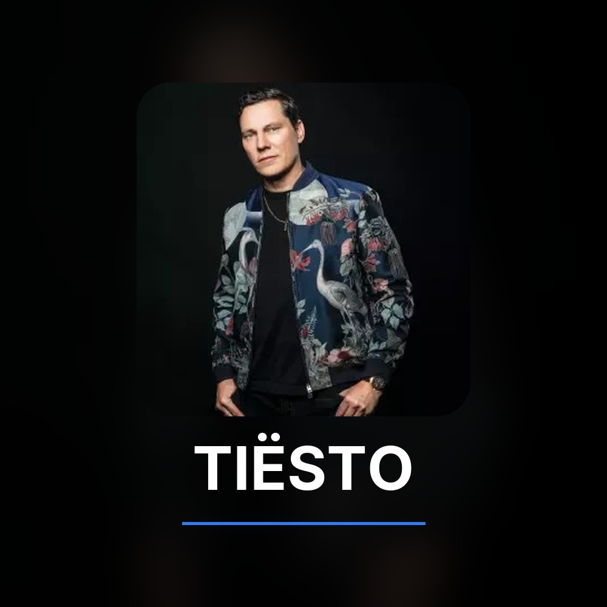
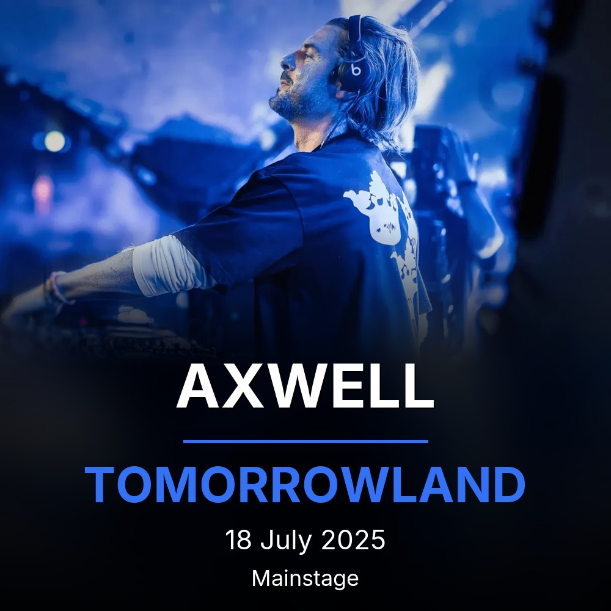
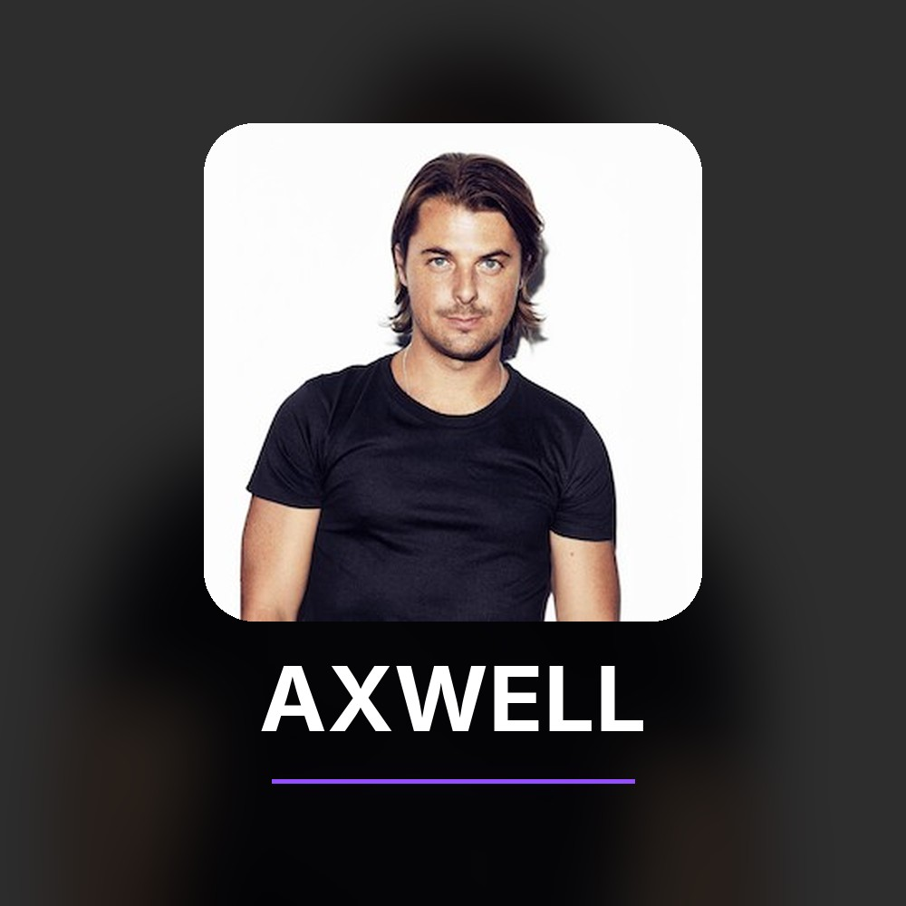
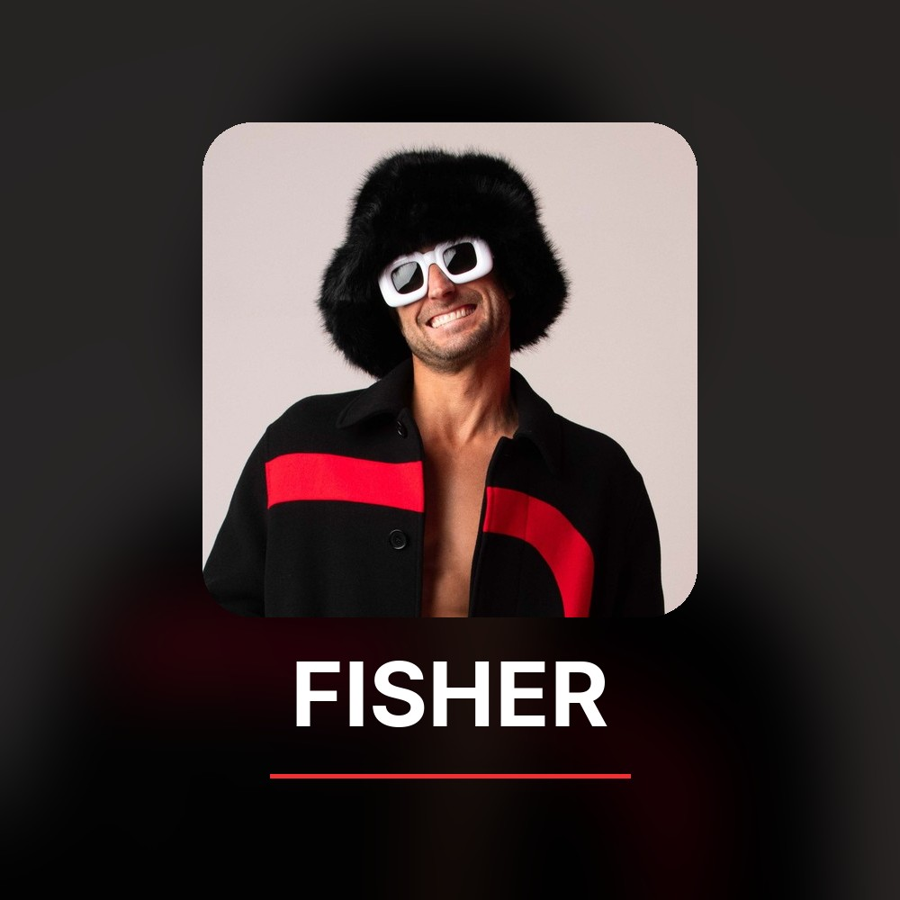

Chapter-based audio extractor for music servers
Turn your chaptered video library into gapless, tagged FLAC or Opus albums ready for Jellyfin and Lyrion.


Cut at chapter boundaries down to the sample. Gapless playback across every track, no clicks, no duplicated audio.
FLAC stays lossless. Opus stream-copies when safe, re-encodes transparently when not. Override with --format.
Writes full Vorbis comments plus festival, stage, and venue. Embeds 1:1 cover art and generates an artist folder image.
A per-album manifest tracks chapter hashes and source mtime. Re-runs on an unchanged library finish in milliseconds.
TrackSplit composes two kinds of art from the source: album covers embedded in every track, and artist folder images your music server uses for artist pages.


Install the CLI, then confirm that ffmpeg and ffprobe are reachable.
pip install -e . && tracksplit --check
One file or a whole directory. Parallel workers spread the load.
tracksplit ~/videos/ --output ~/music/library/
Tagged FLAC or Opus albums, embedded covers, artist folder images. Re-runs skip unchanged sets instantly.
tracksplit ~/videos/ --format opus --workers 4
pip install git+https://github.com/Rouzax/TrackSplit.gitThen verify the toolchain is reachable:
tracksplit --check